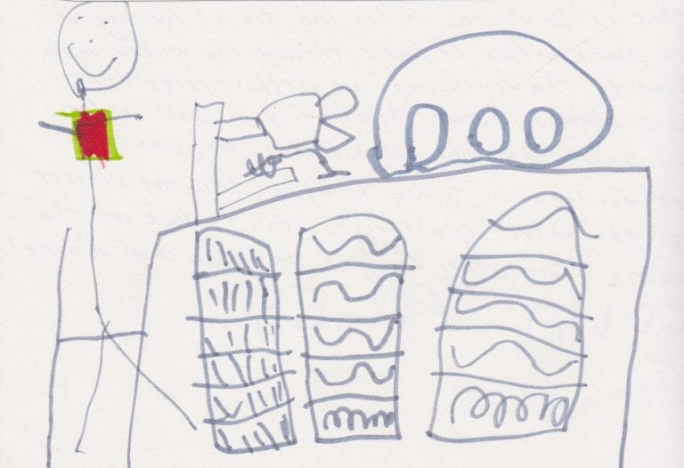
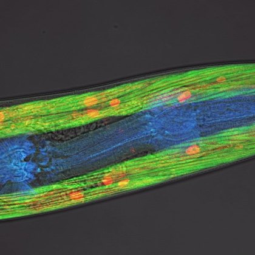
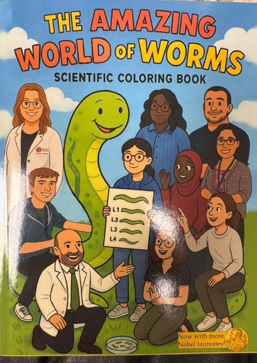
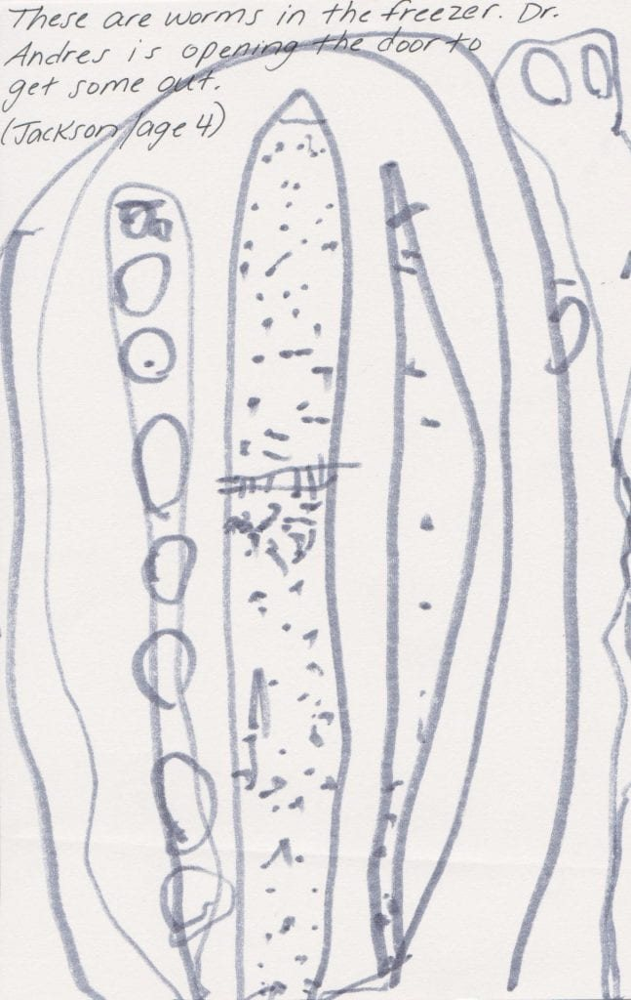
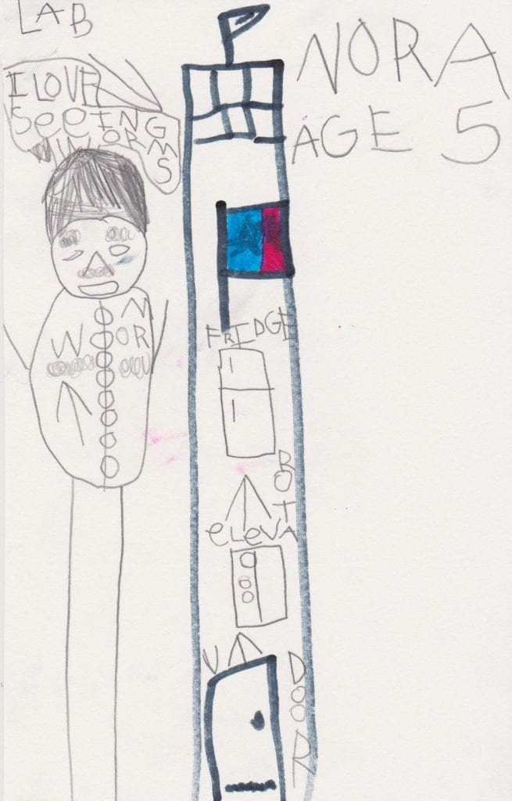
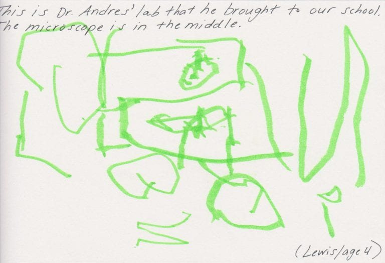
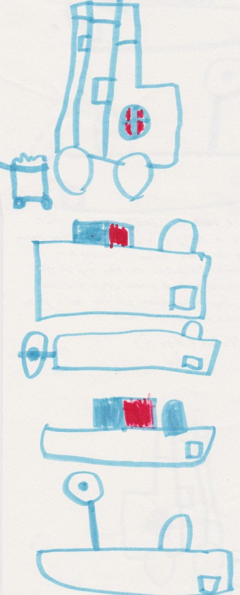
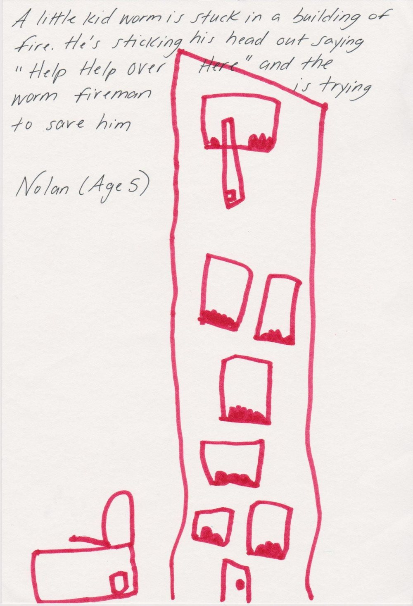
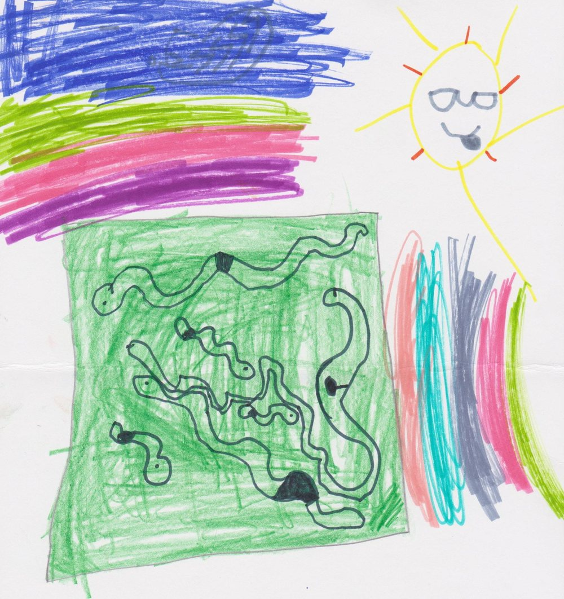
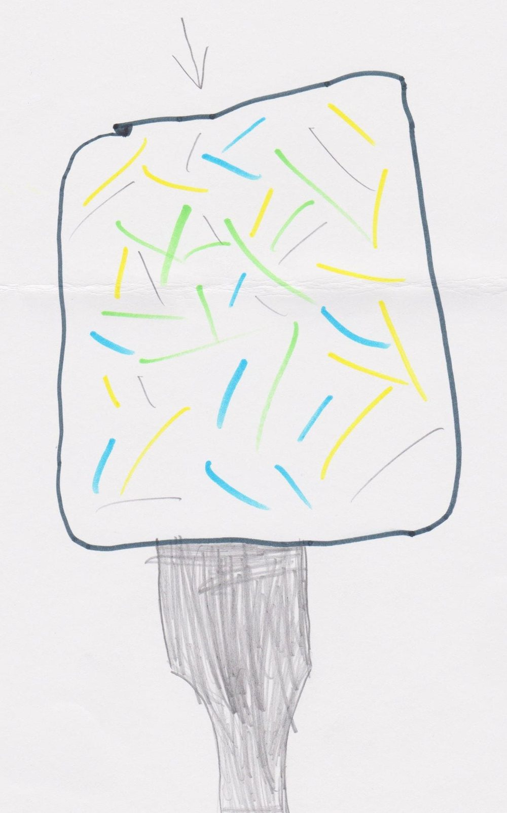

Outreach

Information is only useful if it can be used to alter a process. That is true of an animal reading a magnetic field, and it is true of us. Science is not exempt from the loop it studies.
So we do not treat knowledge as the product and everything else as publicity. We generate knowledge, and we work to integrate both the knowledge and the activity of pursuing it into the society the lab sits inside. Publishing and presenting are the minimum. They move findings to other specialists. Outreach and training are how the work reaches further, into people who will never read our papers, and into students whose futures are not confined to biology.
What is worth transferring is not only what we found. It is how we decided to believe it. How to tell a claim from a conclusion. How to ask what evidence would have to look like for a statement to be wrong. How to notice when a result disagrees with the expectation, and say so out loud rather than quietly. That method is portable. It is useful for decisions about science, and for decisions that have nothing to do with science.
We take that seriously because the position carries a public trust. Scientists are supported by a society in order to generate knowledge, to communicate it, and to hand back the tools that come with it. The tools are the part most easily left out. We try not to leave them out.
That changes how the lab spends its time. We take the work into schools and community groups, we host visitors in the laboratory, and we build things for a general audience. Children who visit leave with something they made. Some of them send drawings back.
What we make for people outside the lab

WormTV A YouTube channel of Caenorhabditis elegans biology, made as an open resource for anyone curious about the animal. It has been watched more than 41,000 times. Visit the channel
The Amazing World of Worms A scientific coloring book introducing children to the worm and to the idea of looking closely at living things. We give copies away at outreach events, and it is also available to buy. Find the book Press and media The lab's work has been covered by NPR, NBC News, Scientific American, The Scientist and outlets in several countries. The full listThe visitor art gallery
Children who visit the lab draw what they saw, and they give us the drawings. A drawing of a worm by a five year old is a record of a scientific observation, so we keep them and we show them. The titles and the descriptions are the artists' own words.








Who we have worked with
College Mentors for Kids. Boy Scouts of America. The Illinois State University Child Care Center. Normal Community High School. We arrange visits for any community member who asks, and we have run after-school sessions designed to build an early appetite for the natural world rather than to teach a syllabus.
What we actually do with visitors
The activities are chosen for the age of the group, and all of them end with the visitor having done something rather than watched something. Each one also carries a piece of method. Predict before you measure. Build the model, then test it against the real thing. Say what would change your mind before you look.
Extracting DNA
Students build a model of DNA from pipe cleaners and marshmallows, then extract real DNA from frozen peas, or from their own cheek cells, using household reagents. It takes thirty to forty five minutes, and the point lands when the DNA becomes visible.
Magnetic worms
Children shape a worm from modeling clay, which we bake in the laboratory autoclave for about forty five minutes. A magnet and a pair of googly eyes go on afterwards, and the worm goes home on a fridge door.
Asking a worm what it likes
For fifth and sixth graders. The group first votes on its own favorite condiments, then tests whether real worms move toward or away from each one on an agar plate. Popcorn butter is a reliable worm favorite.
Building an electromagnet
Students wind copper wire around a bolt, make a working electromagnet, and then go around the room testing what is and is not magnetic. Thirty to forty five minutes, and it scales up or down easily.
If you want us to visit, or to visit us
Write to avidal@ilstu.edu. Tell us the age of the group, roughly how many, and how long we have. We will tell you honestly whether what we do will work for them.